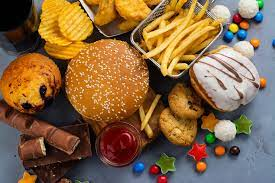

Pourquoi maitriser sa consommation d'aliments hautement transformes :
Une consommation importante d'aliments ultra-transformés est associée à un surrisque d'obésité, de diabète, de dyslipidémie et de cancer. Une nouvelle étude montre que la santé mentale ne serait pas épargnée.